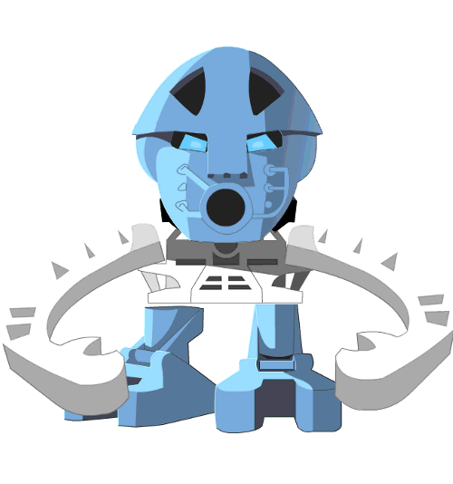
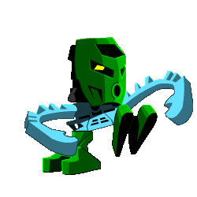
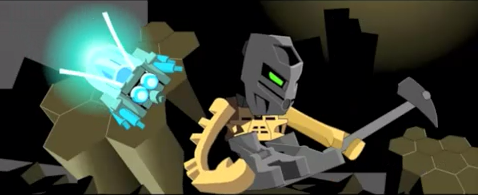

As their name would suggest, the Matoran are the primary species that inhabit the Matoran Universe.
They were created solely for the purpose of maintaining and working in the Universe, building various cities and villages scattered across the world.
Small but diligent

The Matoran are quite small in size, although it can vary depending on their home region.
Because of their tiny stature they often need the protection of the Toa or other defenders, inventions or technologies of their own.
Devoted and loyal
All Matoran (give or take the occasional treacherous individual) are devoted to and follow the Great Spirit Mata Nui. They show their loaylty by throwing different kinds of events and celebrations in the name of the Great Spirit and - of course - following the Three Virtues, which are the backbone of a Matorans life.

From Matoran to Toa
The Matoran are the only race to be able to become a Toa, and possibly later Turaga, although Toa and Turaga are still considered as members of the Matoran species.
Toa are a race of heroes who serve the Matoran Universe